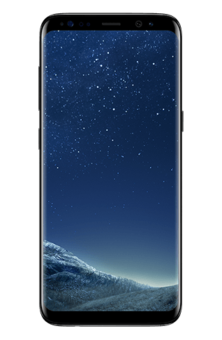
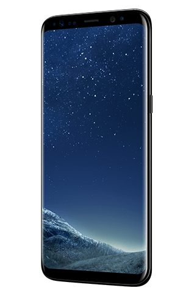
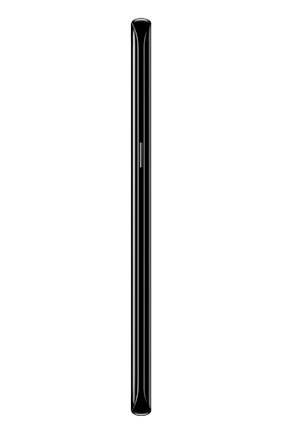
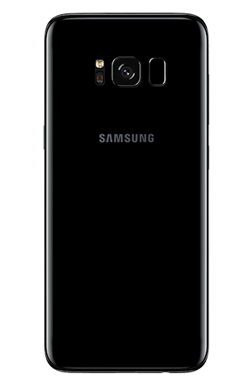

넘어서기 위해 전화기 설계, 배치, 배열 등의 모든 부분에 대해 처음부터 다시 생각했습니다.
Galaxy S8과 S8+는 같은 크기의 갤럭시 스마트폰 중에서 가장 크고, 매력적인 화면과
베젤을 가지고 있으며, 한 손으로도 손쉽게 잡을 수 있습니다.
넘어선 실용적인
활용성을 담아내다
디자인
베젤리스 디자인
Galaxy S8과 S8+의 인피니티 디스플레이는
듀얼 커브드 엣지 스크린으로 좌우 측면이
완벽한 곡선으로 이루어져 있습니다. 전면부
에서부터 곡선으로 이어지는 매끄러운
글래스는 Galaxy S8와 S8+ 메탈로 연결됩니다.
이음새 없는 아름다운 곡선은 완벽한 대칭을
이루는 단 하나의 스마트폰입니다.
카메라
매 순간을 더욱 특별하게 담는 카메라
Galaxy S8의 카메라로 보다 생생하게 일상의
순간을 담아보세요. 1200만 화소 듀얼 픽셀 후면
카메라와 800만 화소 전면 카메라는 당신의 낮과
밤, 그 모든 순간을 아주 빠르고 선명하게 담아낼
것입니다.
보안
강력한 보안
Galaxy S8과 S8+에 탑재한 홍채 인식은 당신의
눈동자에만 반응합니다. 홍채의 패턴은 복제가
불가능합니다. 즉, 당신의 눈을 통해서만 휴대폰에
등록된 정보를 열 수 있습니다. 보다 빠른 잠금
해제가 필요할 때 얼굴 인식으로도 가능합니다.
인공지능
빅스비
빅스비로 휴대폰과 소통하는 방법이
달라집니다. 인공지능 '빅스비'는 대화,
텍스트 및 터치로 휴대폰과 소통하는
방법이 더욱 다양해졌습니다. 또한
검색 방법도 달라졌습니다. 질문을 할
필요가 없이 카메라를 통해 빅스비에게
보여주세요. 정말로 믿을 수 없을 만큼
쉽습니다.
Phone +
다양한 확장성
Galaxy S8과 S8+는 당신의 삶에서 단순한 스마트폰 이상의 존재감을 발휘하도록 설계했습니다.
주변을 관찰하고 즐길 수 있는 여유가 생기고, 어디서나 업무를 이어갈 수 있으며,
결제 방식도 바꿔주는 등 당신의 일상을 편리하게 디자인해줍니다.
Gear 360
Gallexy 8
Gear VR
- 
- 
- 

- 